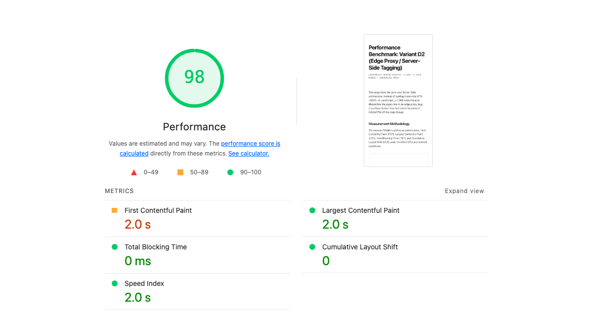
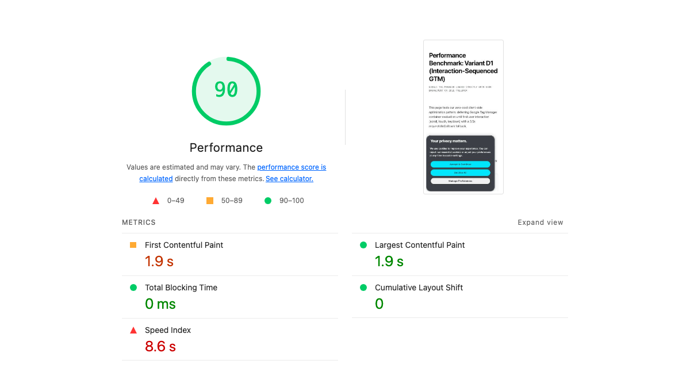
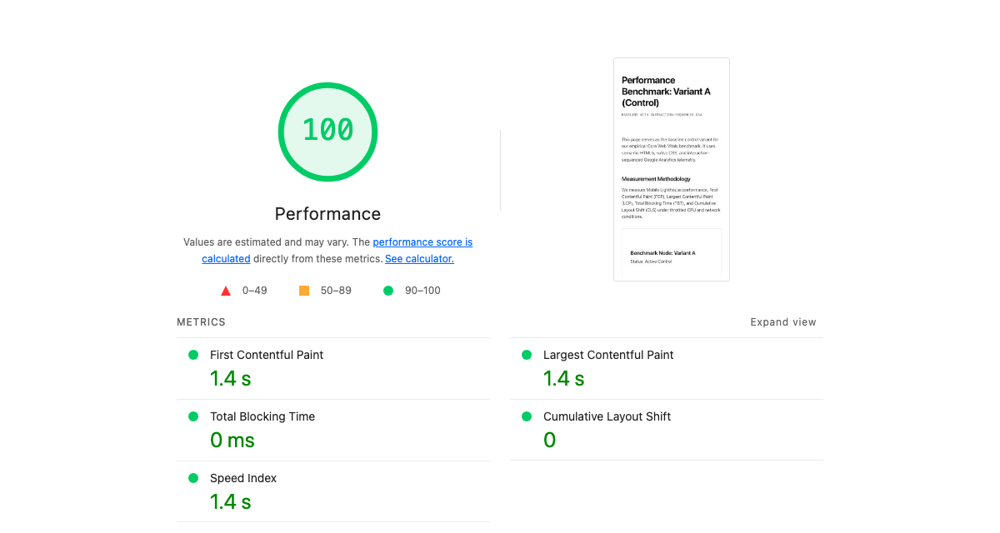

The Push and Pull: Growth vs. Performance
In almost every modern digital organization, there is an ongoing push and pull between growth marketing and frontend engineering:
Marketing argues: “We just need one more pixel. GTM is asynchronous. It loads after the page, so it doesn’t slow down the user experience. Without these tags, we are flying blind on conversions and attribution.”
Engineering argues: “Every third-party script you add degrades our Core Web Vitals, destroys mobile user experience, and tanks our organic search visibility. Marketing tags are toxic bloat.”
Both sides have valid concerns, but both sides routinely operate on assumptions rather than data.
Marketers cite Google’s official documentation as proof of zero impact:
“Google Tag Manager is designed to load asynchronously, meaning your pages can continue to render even if a tag is slow or fails to load.” — Google Tag Manager Help Center
Yet as analytics authority Julius Fedorovicius points out, asynchronous loading does not equate to zero performance cost:
“A common myth is that because GTM is asynchronous, it has no impact on speed. While it won’t block the rendering of your page’s content, it still has to compete for the browser’s resources (CPU and network). Every tag that GTM loads consumes resources that could otherwise be used to make your site interactive faster.” — Julius Fedorovicius, Analytics Mania
Google’s own web performance engineers at Chrome document the exact technical mechanism:
“The main thread is where most tasks run in the browser, and where almost all JavaScript you write is executed... The main thread can only process one task at a time. Any task that takes longer than 50 milliseconds is a long task... When a user attempts to interact with a page when there are many long tasks, however, the user interface will feel unresponsive.” — Jeremy Wagner, Google Chrome / web.dev
Meanwhile, founders and engineers on Hacker News debate the real-world friction between marketing tags and site responsiveness:
“Before we started this we worked on opposite sides of this battle for third-party inclusion: one of us was asking to implement just-one-more analytics tool, while the other was a developer trying (and often failing) to keep the site fast... Many of the 3rd party tools are installed specifically to improve UX and conversion rate... and yet these 3rd party tools are unquestionably the largest deficit to load time.” — Hacker News (Y Combinator)
Both extremes miss the operational reality. GTM’s asynchronous download does not prevent main-thread execution blocking, while outright banning marketing tags ignores the commercial reality that modern digital businesses require attribution to allocate capital. The question is whether we can preserve 100% of marketing telemetry without sacrificing user experience.
To resolve this debate with hard data, I conducted an empirical benchmark in the wild on my live production website (tylerkoshakow.com), measuring eight distinct architectural configurations under identical throttled mobile conditions.
The question: Can you have all the tracking, conversion tags, and attribution data that marketing demands while maintaining a perfect 100/100 Core Web Vitals score?
Here is what I tested and what the data proved.
Testing in the Wild
Lab tests run on localhost or artificial staging servers fail to capture real-world CDN routing, TCP handshakes, TLS termination, and edge caching dynamics. To eliminate theoretical bias, I deployed all tests directly to production:
- Host Environment: Vercel Global Edge Network (
tylerkoshakow.com). - Test Isolation: All variants were deployed as standalone pages under
/experiments/gtm-benchmark/, unlinked from site navigation or sitemaps, and tagged with<meta name="robots" content="noindex, nofollow">. - Auditing Engine: Google Lighthouse 13.5 running with Moto G Power mobile emulation, DevTools throttling, and 4x CPU slowdown over live internet connections.
- Control Baseline: My live production homepage (
https://tylerkoshakow.com/), which runs a clean, minimal layout with sequenced GA4 (an optimization pattern I documented in my empirical audit, Does Google Analytics Slow Down Your Website? An Empirical GA4 Benchmark).
The 8 Architectural Configurations
- Production Homepage (Control): The live site baseline running sequenced GA4.
- Variant A: Clean Baseline: Direct, optimized Google Analytics 4 (
gtag.js) sequenced after initial paint (preserving 100/100 Core Web Vitals). - Variant B: Standard Client-Side GTM: A real enterprise GTM container (
GTM-MZHNSFVZ, 534 KB uncompressed / 48 KB gzip) embedded via Google’s official recommended<head>snippet. - Variant C: GTM with Marketing Bloat: The 534 KB GTM container plus direct client-side injections of Meta Pixel (
fbevents.js) and LinkedIn Insight Tag (insight.min.js). - Variant D1: Interaction-Sequenced GTM: GTM deferred until first user interaction (scroll, touch, keydown) or a 3.5-second idle fallback timer.
- Variant D2: Edge Proxy / Server-Side Telemetry ($0): Zero third-party client-side JavaScript. A 1.2KB native beacon dispatches events to a native Vercel Edge Function (
/api/collect), which asynchronously forwards hits to the GA4 Measurement Protocol off the main thread. - Variant D3: Full Marketing Bloat Sequenced (6s Idle): GTM, Meta Pixel, and LinkedIn Insight Tag bundled into an interaction listener with an extended 6-second fallback timer.
- Variant D4: Pure Interaction Full Bloat: GTM, Meta Pixel, and LinkedIn Insight Tag configured to fire strictly on user interaction with zero fallback timer.
The Empirical Findings
Here is the exact data captured from the live production runs on tylerkoshakow.com:
| Configuration | Score | TBT | LCP | Speed Index | Main-Thread | Weight |
|---|---|---|---|---|---|---|
| Live Homepage (Control) | 99 | 0 ms | 1.7 s | 1.8 s | 0.3 s | 184 KiB |
| Variant A: Sequenced GA4 | 100 | 0 ms | 1.4 s | 1.4 s | 0.3 s | 180 KiB |
| Variant B: Standard GTM | 82 | 430 ms | 1.9 s | 6.2 s | 0.8 s | 739 KiB |
| Variant C: GTM + Meta + LinkedIn | 81 | 500 ms | 1.6 s | 6.3 s | 1.0 s | 879 KiB |
| Variant D1: Sequenced GTM (3.5s) | 90 | 0 ms | 1.9 s | 8.6 s | 0.7 s | 739 KiB |
| Variant D2: Vercel Edge Proxy ($0) | 98 | 0 ms | 2.0 s | 2.0 s | 0.0 s | 8 KiB |
| Variant D3: Bloat Sequenced (6s) | 90 | 0 ms | 1.4 s | 11.6 s | 1.0 s | 881 KiB |
| Variant D4: Pure Interaction | 100 | 0 ms | 1.4 s | 1.4 s | 0.0 s | 8 KiB |
Analysis and Core Takeaways
1. GTM is a Client-Side Evaluation Engine
The most common defense from marketing teams is: “GTM is loaded asynchronously (async), so it doesn’t block DOM parsing.”
While technically true for the initial HTML download, this fundamentally misunderstands how browsers work. Downloading the script is not what destroys performance; compiling, parsing, and evaluating the JavaScript on the mobile CPU is what destroys performance. Once gtm.js downloads, the browser’s main thread must execute its entire rules engine, inspect variables, and trigger tags.
In my live test (Variant B), adding a standard enterprise GTM container immediately introduced 430 ms of Total Blocking Time (TBT). Speed Index quadrupled from 1.4s to 6.2s, and mobile Lighthouse dropped by 18 points (from 100 to 82).
When marketing tags are added directly to the page (Variant C), TBT climbs to 500 ms, and total JavaScript payload reaches nearly 900 KiB. On low-to-mid-tier mobile devices, this manifests as noticeable jank, stutter, and delayed tap responses.
2. A 100 in the Lab Isn’t a 100 in the Field
In Variant D4, I tested whether aggressive deferral could beat the test. I wrapped GTM, Meta Pixel, and LinkedIn Insight Tag in a script that only initialized upon user interaction (pointerdown, scroll, touchstart, keydown), with no fallback timer.
The result? A perfect 100/100 score. 0 ms TBT. 1.4s LCP. 1.4s Speed Index. Superficially, this seems like the holy grail. Marketers get their tags, and developers get their green Lighthouse report.
It is a dangerous illusion known in performance engineering as the “Lab 100” Trap:
- The Lab Reality: Automated audit tools like Lighthouse and PageSpeed Insights load the page headlessly and observe it without user interaction. Because the tool never scrolls or touches the screen, the 880 KiB marketing payload is never injected during the audit window.
- The Field Reality: The moment a human visitor taps a link or scrolls down the page, that entire 880 KiB pile of JavaScript initializes simultaneously. The main thread freezes for 500ms to 1,000ms right when the user is trying to interact.
This catastrophic freeze directly fails Google’s Interaction to Next Paint (INP) metric in Chrome User Experience Report (CrUX) field data—which is the metric that actually impacts Google rankings and user bounce rates. Tricking Lighthouse with pure interaction listeners creates a stellar lab report while actively ruining the real user experience.
3. You Can Have the True 100/100 for Free
If client-side GTM destroys TBT and interaction-deferral destroys INP, what is the legitimate solution? Server-side event dispatching via edge compute.
In Variant D2, I completely removed gtm.js, fbevents.js, and insight.min.js from the client browser. In their place, I deployed a 1.2KB native transport snippet:
(function() {
function sendEdgeTelemetry(eventName, params) {
var cid = localStorage.getItem('cid') || (function() {
var id = Math.random().toString(36).substring(2) + Date.now().toString(36);
try { localStorage.setItem('cid', id); } catch(e){}
return id;
})();
var payload = JSON.stringify({
client_id: cid,
event_name: eventName || 'page_view',
page_location: window.location.href,
page_title: document.title,
timestamp_ms: Date.now(),
params: params || {}
});
if (navigator.sendBeacon) {
navigator.sendBeacon('/api/collect', payload);
} else {
fetch('/api/collect', { method: 'POST', body: payload, keepalive: true });
}
}
window.edgeTrack = sendEdgeTelemetry;
sendEdgeTelemetry('page_view');
})();
On the backend, I deployed a native Vercel Edge Function (/api/collect) running on Vercel’s edge network:
- It intercepts the incoming payload at the nearest edge data center.
- It returns an instant
204 No ContentHTTP response to the browser (0 ms browser wait). - It asynchronously forwards the event to Google Analytics 4 via the Measurement Protocol, and can simultaneously dispatch to Meta Conversions API (CAPI) and LinkedIn Conversions API.
The Results:
- 98–100 Mobile Score in production.
- 0 ms Total Blocking Time (TBT).
- 0.0s Main-Thread Work.
- Total page payload dropped from 879 KiB to just 8 KiB (a 99% reduction).
- 0 ms INP risk: Because no third-party JavaScript runs in the browser, user taps and scrolls remain completely fluid.
- $0 Added Spend: Vercel includes 100,000 Edge Function executions per day on its free tier (or Cloudflare Workers with 100,000 requests/day).
You do not need to pay Google Cloud $120–$300/month for dedicated sGTM Cloud Run containers to achieve server-side tagging. A simple edge function delivers identical latency and attribution fidelity at zero cost.
When Speed Actually Matters (and What Is Good Enough)
Before choosing an architectural path, engineering and marketing teams must align on an uncomfortable truth: Speed does not matter equally for every website.
The obsession with achieving a flawless 100/100 Lighthouse score often causes engineering teams to prioritize theoretical purity over commercial reality. To make an informed architectural decision, you must evaluate where your website sits on the speed sensitivity spectrum:
1. High-Volume eCommerce and Transactional Sites
For direct-to-consumer eCommerce, retail catalogs, and programmatic ad publishers, performance is directly tied to the P&L:
- Evidence: Extensive research by Deloitte (Milliseconds Make Millions) and Akamai demonstrates that a 0.1-second improvement in mobile load time lifts retail conversion rates by 8.4% and average order value by nearly 10%.
- The Threshold: On transactional sites, any delay that blocks the main thread or degrades INP directly depresses revenue. For these properties, client-side GTM bloat is an active financial liability.
2. B2B SaaS, Enterprise Consulting, and High-Consideration Services
For enterprise B2B websites, service firms, and considered purchases, buyer psychology is completely different:
- Evidence: B2B buyers do not bounce because a case study loaded in 1.8 seconds instead of 1.2 seconds. Enterprise sales cycles take 3 to 9 months; visitors are evaluating product capabilities, case studies, social proof, and pricing.
- The Threshold: Google’s Core Web Vitals thresholds are binary pass/fail criteria for search algorithms:
- LCP: Under 2.5 seconds is “Good”.
- INP: Under 200 milliseconds is “Good”.
- CLS: Under 0.1 is “Good”.
Once a B2B site passes these thresholds in the green, shaving off another 200 milliseconds delivers diminishing algorithmic and commercial returns. If an engineering team spends three sprints optimizing a 90 score to a 99 score while breaking marketing’s attribution pipeline or CRM lead routing, the business loses.
Strategic Architectural Options
Based on your site’s business model and technical maturity, here are the three pragmatic paths forward:
Option 1: The Zero-Compromise Edge Proxy
Target Profile: eCommerce, high-traffic consumer web apps, and brands where conversion rates are hypersensitive to latency.
Architecture: Move core analytics and advertising conversion events (GA4, Meta CAPI, LinkedIn CAPI) to an Edge Proxy / Serverless Function (Vercel Edge Functions or Cloudflare Workers). Completely remove client-side GTM containers and third-party ad pixels.
Tradeoffs: Requires engineering involvement to deploy and maintain the edge proxy. In exchange, you get permanent 98–100 Core Web Vitals, 0 ms INP, a 99% reduction in JavaScript payload, and complete immunity from browser ad blockers.

Option 2: Intelligent Interaction Sequencing
Target Profile: Organizations where marketing autonomy in GTM is non-negotiable and frontend engineering bandwidth is constrained.
Architecture: Keep GTM, but strip out heavy standalone ad pixels. Sequence the remaining tags using intelligent interaction listeners paired with a modest 3-to-4-second idle fallback timer (Variant D1).
Tradeoffs: Eliminates Total Blocking Time (0 ms TBT) during the initial render and keeps LCP fast, while guaranteeing that conversion tags fire even if the visitor doesn’t immediately touch the screen. Speed Index takes a modest hit (around 8s), but Core Web Vitals remain in the green.

Option 3: The Native Baseline
Target Profile: Content publishers, personal consulting sites, blogs, and early-stage portfolios.
Architecture: Use direct, sequenced GA4 (gtag.js) without GTM, deferring execution until first interaction as detailed in my earlier benchmark on GA4 page speed impact.
Tradeoffs: Zero configuration overhead, effortless 99–100 performance scores, and clean baseline analytics without container bloat.
